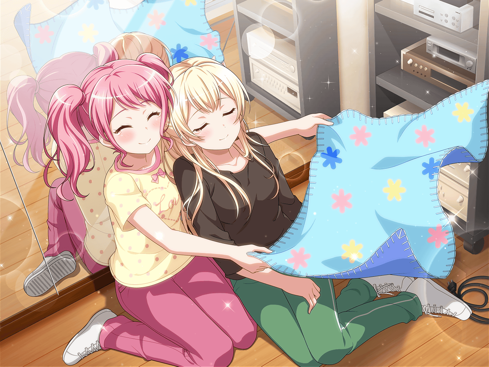

数日後
レッスンスタジオ
彩
（あれから千聖ちゃん……練習に来てない。
映画の撮影、やっぱり忙しいよね）
彩
（千聖ちゃんのことだから、きっと知らないところで
個人練してるんだろうけど……大丈夫かな？）
彩
（あの時……どうして千聖ちゃんはパスパレが好きって
言ってくれなかったの？
千聖ちゃん、何を考えてるの……？）

撮影現場
千聖
……
千聖
（どうしてあの時、私は何も答えられなかったのかしら）
千聖
（感情をぶつけるだけじゃ、スタッフを説得できると
思えなかったから？ ぶつけたところで、いい方向には
動かないと思ったから？）
千聖
はあ……
千聖
私は、どこまでつまらない人間なのかしら
映画スタッフ
白鷺さん、以上で今日の撮影終わりでーす！
お疲れ様でした！
千聖
はい！ お疲れ様でした。
失礼します
千聖
時間は……まだあるわね
レッスンスタジオ
彩
あ、千聖ちゃん……！ お、お疲れさまっ！
千聖
ええ……お疲れ様
彩
今日も映画の撮影だったんだよね？ お疲れ様っ！
撮影のあとに練習なんて、千聖ちゃんすごいなあ……
どっちもやるって、すごい決断だよっ！
千聖
……
彩
……
千聖
この間のこと、怒ってないの？
彩
えっ……
千聖
パスパレが好きか、って質問に答えなかったこと
彩
ちょっとだけ、ショックだったかな。
千聖ちゃん、これからどうするんだろうって少しだけ
不安にもなった
千聖
……私ね、夢を見てみたいの
彩
夢？
千聖
私、昔から叶える道筋が見えそうな目標しか持ってこなかった。
夢みたいにふわふわしてるもの、見ないようにしていたの
千聖
私が夢を見たいと思えるようになったのは……
パスパレのおかげなのかもしれない
千聖
どちらの仕事もやりきって、これからもパスパレを続ける。
これって、今の私からしたら道筋の見えない夢みたいな
ものなの
彩
……
千聖
でも、いざ夢を見たいと思っても
理屈っぽく考えてばっかりで、何も前に進めないのよ
千聖
あの場で、私がパスパレを好きって言ったところで、
なんの意味があるのか考えてしまって……答えられなかった
千聖
好きって気持ちだけで、パスパレを続けさせてくれるなんて
思えなくて
彩
千聖ちゃん……
千聖
結局、安全で確実な道をいつも探してる。
私なんか、夢も持てないつまらない人間なのよ。
ねえ、彩ちゃん
千聖
夢って、どうしたら持てるようになるのかしら？
彩
だ、誰だって夢、持っていいんだよっ！
千聖ちゃんだって、夢持てるよっ！！
千聖
えっと……？
彩
夢を持とうって思ったこと自体、千聖ちゃん、
すっごく前進してるってことだと思う！
彩
だから、その調子で少しずつ少しずつ夢を持てるように
進んでいけばいいんだよっ
千聖
あの、彩ちゃん……
彩
……千聖ちゃん。私なんか、なんて思わないで
夢、見ようよ！
千聖
えっと……答えになっていないのだけど……
彩
えっ！？ あ、え、えっと……その……ごめんっ！
でも！ 千聖ちゃんに、前に進めないなんて
言わないでほしくって……
彩
ごめん……うまく言えなくって
千聖
夢を持ちたい……これが今の私の夢、なのかしら？
彩
うん、そうだよ。それ、千聖ちゃんの夢だよ！
千聖
……！
千聖
あ……ご、ごめんなさい……
涙が……ふふっ、私、疲れてるのかしら……
彩
ご、ごめん……私、うまく答えられなくって
千聖
ううん、いいのよ。ありがとう、彩ちゃん。
……最後に、もう１つ聞いてもいい？
彩
うん。何？
千聖
あなたの夢は、どうやったら叶えられるの？
彩
努力！ 努力すれば、夢は叶うからっ！
千聖
ふ……ふふっ……！ そうよね。あなたはそうだったわね
彩
え、えへへ……そんな私でいろって最初に言ってくれたのは、
千聖ちゃんだよ

千聖
ありがとう……彩ちゃん……
ごめんなさい、少し疲れていて……休んでいいかしら……
彩
うん。千聖ちゃん、お疲れさま。
休んだら、一緒に練習、しよう